Live Management: Managing Resources
Use the manage resources tab to browse the resources on your nodes and clone any of them across your infrastructure.
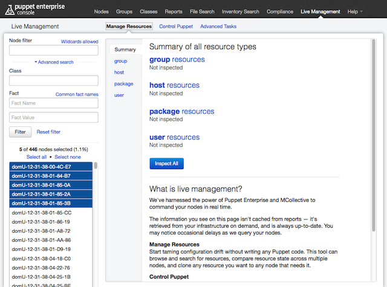
Resource Types
The live management tools can manage the following resource types:
For an introduction to resources and types, please see the Resources chapter of Learning Puppet.
The Summary View
The summary view has an “Inspect All” button, which scans all resources of all types and reports on their similarity. This is mostly useful when you think you’ve selected a group of identical nodes but want to make sure.
Using “Inspect All” at the start of a session will pre-load a lot of information into memory, which can speed up later operations.
Finding Resources
To find a resource to work with, you must first select a resource type. Then, either search for your resource by name or load all resources of the type and browse them.
When you select a type for the first time in a session, it won’t automatically display any resources:
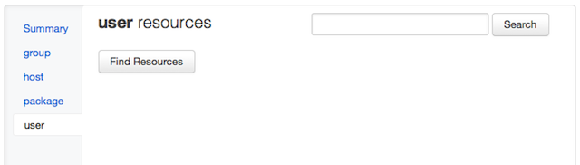
Searching and browsing only use the current selection of nodes.
Browsing a Type
To browse a list of all resources, use the “find resources” button.
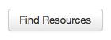
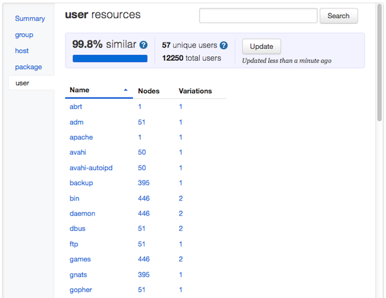
This will return a list of all resources of the selected type on the selected nodes, plus a summary of how similar the resources are. In general, a set of nodes that perform similar tasks should have very similar resources. You can make a set of nodes more similar by cloning resources across them.
The resource list shows the name of each resource, the number of nodes it was found on, and how many variants of it were found. You can sort the list by any of these properties.
To inspect a resource, click its name.
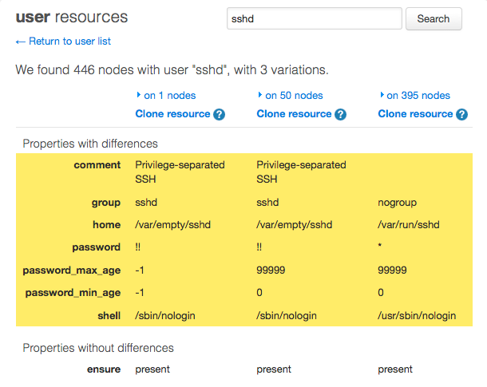
When you inspect a resource, you can see the values of all its properties. If there is more than one variant, you can see all of them and the properties that differ will be highlighted.
To see which nodes have each variant, click the “on N nodes” labels to expand the node lists.
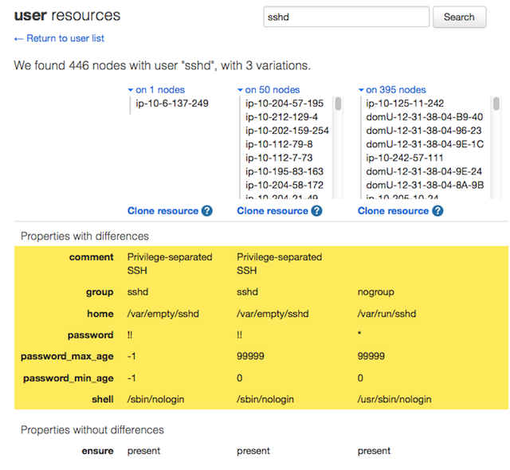
Searching by Name
To search, enter a resource name in the search field, and confirm with the enter key or the “search” button.
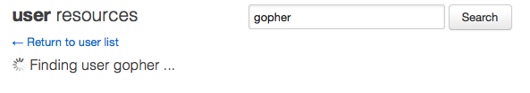
The name you search for has to be exact; wildcards are not allowed.
Once you’ve located a resource, the inspect view is the same as that used when browsing.
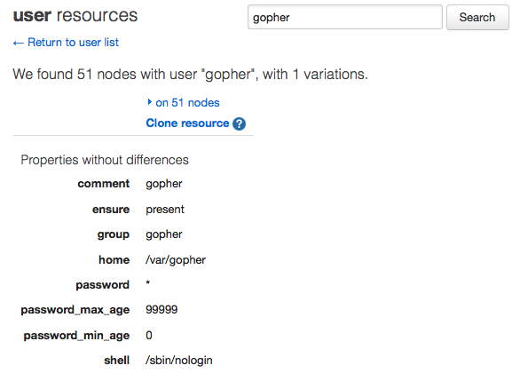
Cloning Resources
You can use the “clone resource” links on a resource’s inspect view to make it identical on all of the selected nodes. This lets you make your population of nodes more alike without having to write any Puppet code.
Clicking the clone link for one of the variants will raise a confirmation dialog. You can change the set of selected nodes before clicking the “preview” button.
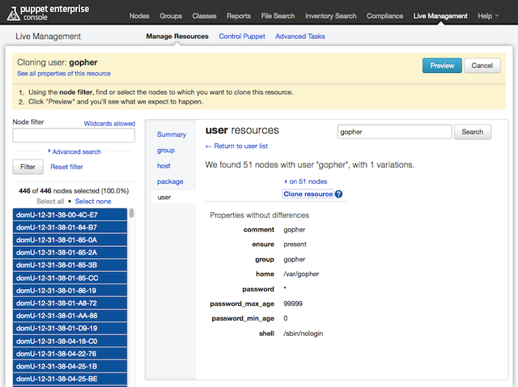
Clicking “preview” will show the pending changes and enable the “clone” button. If the changes look good, click “clone.”
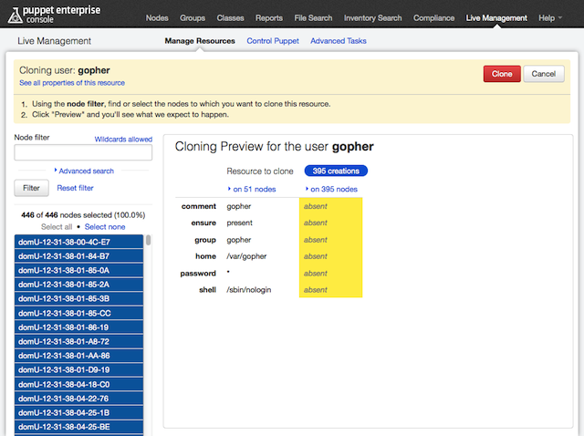
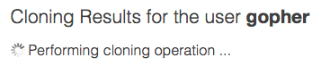
After the resource has been cloned, you can see a summary of the results and the new state of the resource.
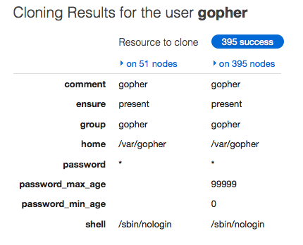
Special Behavior When Cloning Users
When you clone a user, any groups it belongs to are also automatically cloned.
Note also that the UID of a user and the GIDs of its groups aren’t cloned across nodes; this means a cloned user’s UID will likely differ across nodes. We hope to support UID/GID cloning in a future release.
- Welcome to Puppet Enterprise
- Installing Puppet Enterprise
- The Console
- Puppet For New PE Users
- Orchestration For New PE Users
- Cloud Provisioning
- The Compliance Workflow
- The PE Accounts Module
- Maintenance and Troubleshooting